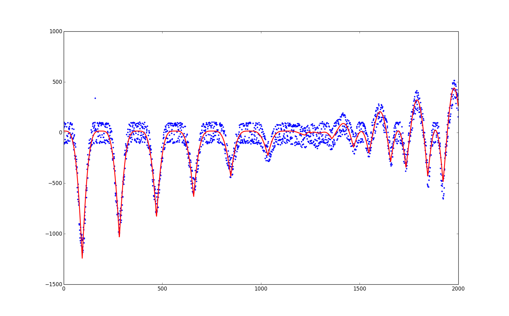

Describe the ideas/observations/principles underlying the compressor algorithm, the compression results with the given data sets. You can (but do not have to) use also charts, GNU-plot figures etc. to clarify the numerical information. This information will not be published to the other groups before the final round. You can update this document on each round.
You should also include a directory with the source code.Note: The programs must compile in Linux and conform to the runtest.sh script in the template.
curve1.dat: The first data set consists of a set of 2000 points in 2d-space which, when plotted, seem to form a curve with some periodic behaviour. Our aim was to compress the data by finding a function that models the data 'well enough' so that we'd save some space by saving only the residuals between the data and the model. We did the model in two parts, as there appears to be a change in the data at approximately after 1250 data points. The first part consists of 'bumps' with fixed period, and we decided to model this with the absolute value of the cosine function. Some fine tuning and additional parameters and mutiplication with a linear function were needed, but finally this seems to work quite well. The second part of the data (the last 750 points) needed a bit more complex model, but it is nevertheless another cosine-based function. The model achieved residuals mostly below the order $10^2$, and we encoded them using Huffman coding for both the integer and decimal part separately. The final model was of the form $$m(x)=\left\lbrace \begin{array} -|ax+b|\cdot(|\cos(cx)|-1)^2 +d, \;\;\;\;\;\;\;\;\; \text{ if }x<1250\\ (ex+f)(|cos(gx+h)+i|+j)+k, \;\;\; \text{ otherwise.} \end{array} \right.$$ 
paleo.csv The paleo.csv data contains scientific data about prehistoric ammonoids. First of all, we noticed that bzip2 compresses the data relatively well. Still, there were some regularities in the data which we guessed would be hard for ready compression tools to take advantage of. For example, attributes 10-14 in each record were (mostly) reproducible with simple calculations from the other values in the record. Our approach was to replace the complex values in these fields with simpler ones that would be easier for the compressors, and help us reproduce the original values in the decompression phase. Now, using bzip2 on this modified data yielded a much imporved result (roughly 64kB after the modification, 102kB before). For the fields which we were able to reproduce by calculations, we replaced the original value with the accuracy of the result in the data. The 'lobes' attribute seemed to often be the same in consecutive records, so we included it in the modified data only if it wasn't. Finally, a total of three columns in the data contained information about the ammonoids' diameter, and storing just one of these values was often enough to reproduce the other two. Finally, the modified data was compressed one column at a time (same attribute in all records), so that bzip2 could better find the regularities.
ty.txt
caravan.dat
final.dat
group.stock.dat
monty_python_data_1.dat & monty_python_data_2.dat
The rest of the penalty data